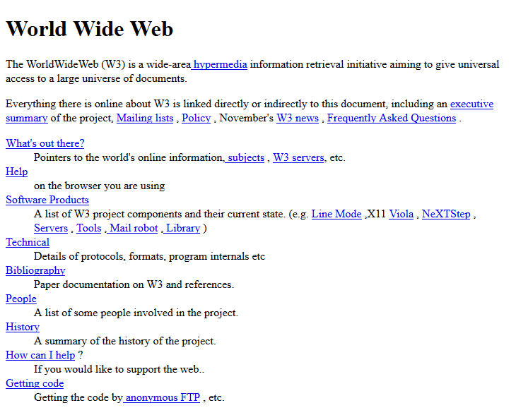
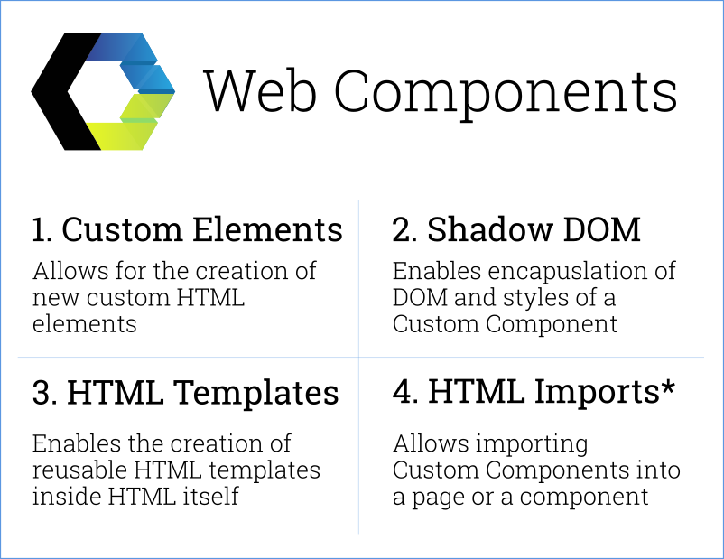

Brief history of the web
Before we talk about web components, we’ll take a short look at the history of the web itself.
In the early days, when the World Wide Web was first invented, it was exclusively used for transferring text documents. It provided a standard way of transferring documents between connected computers. These documents would consist of text content with a few images due to technical limitations.
Then, CSS was introduced adding styling to these pages. CSS allowed styling to be separated from the HTML content. But CSS these days was still a far cry from what we have now.
Javascript followed soon after. Adding some level of interactivity to the web. Javascript, as the name suggests, was first introduced to add some level of scriptability to the web.
Board of Investment
With time, these technologies evolved rapidly. Picking up a lot of features along the way. But the basic building blocks of the web remained relatively unchanged.
At the same time, the usage of web technologies has changed dramatically. Used initially to share simple documents across the internet, now we use the same technologies to build fully featured cloud applications.
Problems with the current approach to making components
The basic component of the web, HTML tags, have changed with time as represented nicely at this site.
But, with the complexity of the web today, we need a lot more components to build useful products. To this end, we use a lot of HTML, CSS, and Javascript in the page to create simple components such as date pickers and navigation.
This approach of building components, even with external libraries creates some problems.
- The logic and styling of these components are not fully encapsulated.
- Most of the Web Components are not semantic and made up of a soup of divs.
- We can use libraries such as Angular/React/Jquery to build components, but those components are then not sharable between libraries.
Introducing Web Components
Building blocks of web componentsWeb Components are made up of four main set of standards
- Custom Elements
- Shadow DOM
- HTML Templates
- HTML imports*
We’ll be looking at each of these in much detail in future posts. For now, we’ll look at an overview of each of these specifications.
Custom Elements
Custom Elements allows authors to build fully features custom DOM elements. We could always have custom tags. But these would then have to be styled and scripted to work the way we needed.
With Custom Elements, we will be able to simply use the same methods that the browser vendors use to create elements such as the video element.
Shadow DOM
DOM stands for the Document Object Model. This is the representation of the HTML document that the browser builds and understand form the HTML we provide.
The ‘shadow DOM’ is an encapsulated DOM within the main DOM. This encapsulation allows the Web Components to be re-used without considering the environment. The Shadow DOM ensures that the CSS and the DOM do not leak out of the containing component.
HTML Templates
Use the <template> tag to have inline HTML/JS templates. These only get activated when an element is added. These define the method of how an author would separate the template from the rest of the HTML.
HTML Imports*
This is a standard to import HTML element. This is currently on hold because some vendors would like to use ES6 in place of HTML imports for the time being.